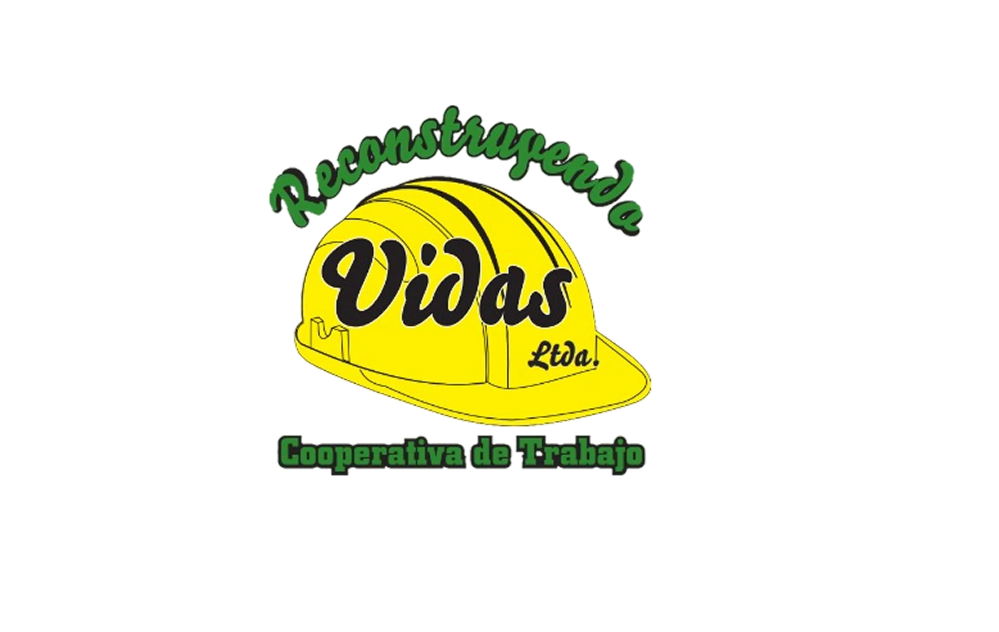
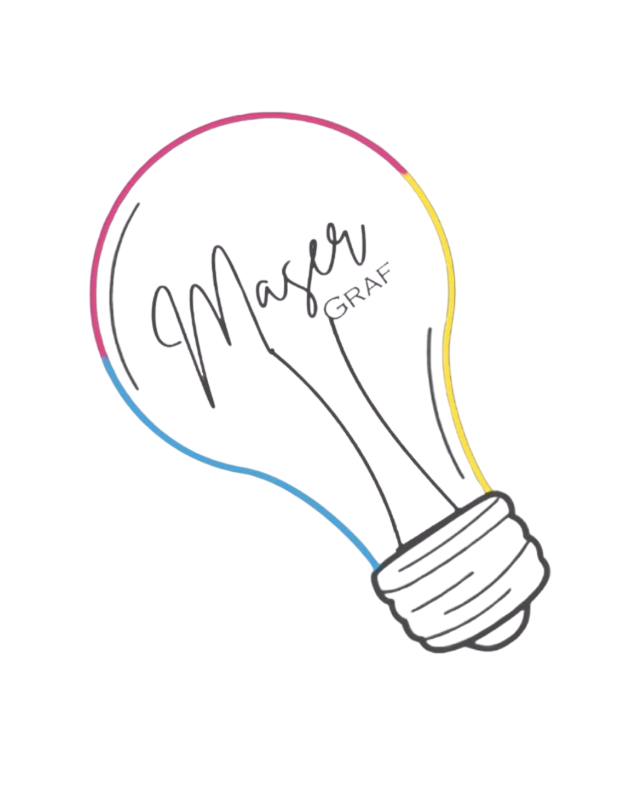
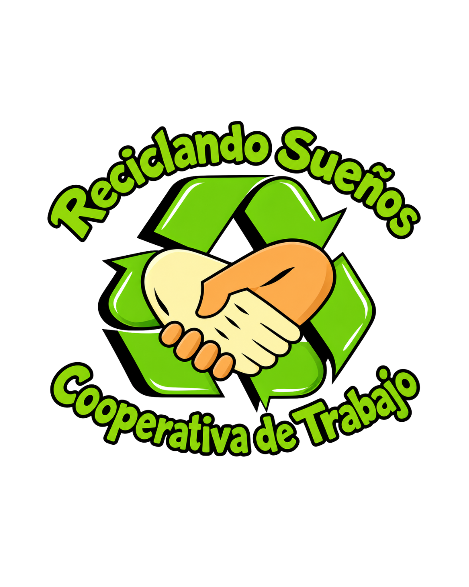

Construcción y servicios

Reconstruyendo Vidas
Obras, mantenimiento de espacios verdes, instalaciones, herrería y construcción. Una cooperativa que se capacitó junto a universidades, UOCRA y organizaciones del territorio.
Lanús
Construimos oportunidades reales para que quienes atravesaron contextos de encierro puedan reinventarse en comunidad.
trabajadores y trabajadoras en cooperativas
cooperativas autogestionadas
espacios sociocomunitarios
comedor - merendero barrial
Nuestra historia
Nacimos en 2015, cuando un grupo de compañeros y compañeras decidió organizar su conocimiento técnico y su voluntad de vivir de otra manera: lejos del delito y la violencia, cerca del trabajo y la dignidad.
En 2019 constituimos formalmente la Asociación Civil Grito Sagrado. Desde entonces, creamos procesos productivos, espacios de contención y herramientas concretas para transformar trayectorias de vida.
Lo que creemos
Trabajo formal, capacitación, cuidado y pertenencia son condiciones necesarias para que una persona pueda proyectar un futuro distinto. Esa es la política cotidiana que sostenemos en cada barrio.
Trabajo cooperativo
Cuatro cooperativas autogestionadas nacidas para convertir saberes, oficios y compromiso en sustento y autonomía.
Construcción y servicios

Obras, mantenimiento de espacios verdes, instalaciones, herrería y construcción. Una cooperativa que se capacitó junto a universidades, UOCRA y organizaciones del territorio.
Diseño gráfico

La cooperativa Masergraf Ltda. es una empresa fundada en 2010 por un grupo de compañeros y compañeras decididos a hacerse cargo de su propio destino. Qué hacemos? Cartelería, marquesinas, papelería institucional, estampados por tampografía, estampados por sublimación, gráfica vehicular, volantes, folletos dípticos y trípticos, vinilos autoadhesivos, serigrafía, carteles corpóreos, impresiones offset, afiches
Medio ambiente

Recuperación, acopio, reciclado y comercialización de materiales de descarte, promoviendo prácticas sustentables y cuidado ambiental. Brindamos capacitaciones, contamos con la logística (vehículos, sistema de recolección, coordinación de días y horarios).
Formación
Brindamos capacitaciones en construcción, administración cooperativa, diseño de proyectos urbanos y gestión ambiental para fortalecer cada proceso productivo.
Acompañamiento
El trabajo se integra a actividades culturales, deportivas, apoyo escolar, alfabetización de adultos, talleres de género y abordajes de consumos problemáticos.
Acción y transformación
Imágenes de trabajo colectivo, obra y organización en los barrios.
Comunidad
Club Sociedad de Fomento Cultural y Deportiva Villa Jardín, Obón 2425. Actividades culturales y deportivas, cursos de oficio, apoyo escolar, alfabetización, talleres y el comedor-merendero “Los Pichoncitos de Jardín”.
El comedor comunitario “Los Pichoncitos de Jardín” es un espacio de encuentro y acompañamiento para las familias de Villa Jardín y sus alrededores. Allí se brinda comida todos los días de la semana, de lunes a lunes, para acompañar a quienes atraviesan situaciones de vulnerabilidad y necesitan contar con un plato de comida.
Desde nuestra organización colaboramos de manera directa con el comedor, proveyendo los alimentos necesarios para que pueda sostener esta tarea todos los días. Nuestro aporte permite acompañar el funcionamiento cotidiano del espacio y contribuir a que la comida llegue de manera continua a quienes la necesitan.
Construir en red
Trabajamos con universidades públicas y organismos para ampliar el acceso a formación, extensión universitaria y acompañamiento productivo.
Seamos comunidad
Si querés acompañar esta construcción colectiva desde una institución, un proyecto o tu organización, conversemos.
Volver al inicio